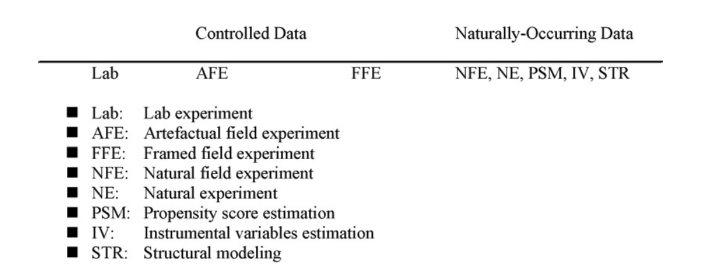

Advanced Quantitative Methods for Health Policy and Management
2025-01-08
Advanced Quantitative Methods for Health Policy and Management
Experiments and Machine Learning for Health Services Research
Primary Goal: Equip you with tools to design, analyze, and interpret field experiments and apply machine learning to health services research.
Key Focus Areas:
Field experiments for causal inference.
Machine learning for prediction and causal analysis.
Applications:
Health policy evaluations, resource allocation, and improving healthcare decision-making.
Research: Designing & evaluating innovative approaches to improve health service delivery, globally.
UNC Health Policy & Management (7 years)
Carolina Population Center
Sheps Center for Health Services Research
Previously: Renmin University of China, World Bank
Training: U Maryland (PhD), Stanford (pre-doc)
PhD Student in Health Policy and Management (Economics Track)
Research Interests:
- Evaluation of digital health programs for underserved populations
Background:
- MSc in Public Health, London School of Hygiene and Tropical Medicine (LSHTM), UK
- MBBS, Central South University, China
- Former RA at UNC-China Project,implementing an RCT on rural telemedicine kiosk program
Role:
- Available for technical support and office hours
- Assisting with labs and project feedback
Note
Important!
You’ll hear the term “causal machine learning” in the literature. This is a misnomer!
Machine Learning is about prediction. Period. It does not magically solve the causal inference problem.
It CAN:
| Unit | Treatment (W) | Y(0) | Y(1) | Observed Outcome |
|---|---|---|---|---|
| 1 | 1 | ? | 5 | 5 |
| 2 | 0 | 3 | ? | 3 |
| 3 | 1 | ? | 6 | 6 |
| 4 | 0 | 4 | ? | 4 |
Randomization ensures that treatment is independent of potential outcomes:
\[ W_i \perp \!\!\! \perp (Y_i(0), Y_i(1)), \]
Hence, \(\mathbb{E}[Y | W_i = w] = \mathbb{E}[Y_i(w) | W_i = w] = \mathbb{E}[Y_i(w)]\) for all \(w \in \{0, 1\}\).
Therefore, the difference between \(Y_i(1)\) and \(Y_i(0)\) is the ATE:
\[
\mathbb{E}[Y_i(1) - Y_i(0)] = \mathbb{E}[Y_i(1)] - \mathbb{E}[Y_i(0)] = \tau.
\]
Generalizability: Would it work in different settings?
Scalability: Can it scale to create meaningful impact?
